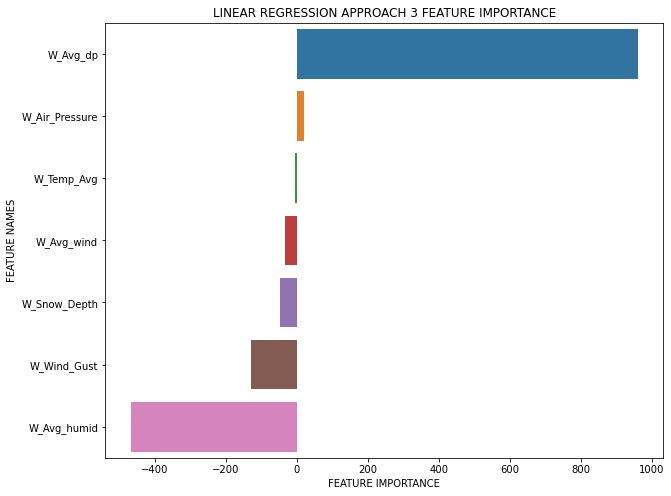

As per results of the four approaches, LR has much larger mse(mean squared error) and mae(mean absolute error) and somewhat smaller R2 scores comparing to RF, which coincides to the characteristics of the models.
After comparing, the better target and features set is:
The metric and feature importance comparison can be seen below
Metric
Feature Importance Linear Regression

Feature Importance Random Forest
Final Result
After the preliminary result we try to do different approaches to get better result for the target(y) Counts_bike
Add new model
We try to explore the decision tree model for the machine learning. We use Counts_bike as the target and weather data(average_temp, average_wind_speed, wind_gust, air_pressure, snow_depth, average_humid, average_dew_point) for the input(X). After we split and train the model , the result for R2 is 0.96377 with overall model score 0.573. This score is more lower than the Random forest model that we do in the preliminary step.
Eliminate Features
From the Feature importance, we can see that the snow_depth is the least importance features. We eliminate the snow_depth and run the code again for the linear regression, random forest and decision trees. From the result we can see that random forest and decision trees model has the same MAE,MSE,RMSE,and R2, while the linear regression have higher score for MAE,MSE,RMSE,and R2, but lower score for the R2.
From the approaches we have been done and compared it to the preliminary result, we can summarize that the best model for the bike demand prediction is the Random Forest with the 7 features( average_temp, average_wind_speed, wind_gust, air_pressure, snow_depth, average_humid, average_dew_point) and target counts_bike.
Below is the metric result and graph comparison between model, we add residual plot to show that our residual normally distributed and we add the scatter plot to show how our model is performing